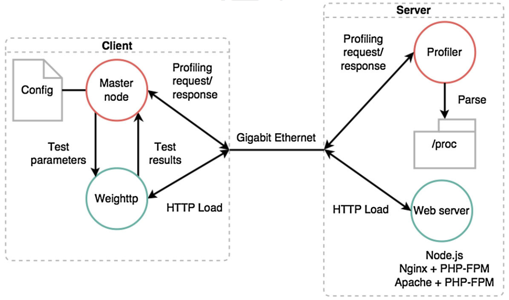

Basic controls
use the right-left arrow buttons on the keyboard to move forwards and backwards respectivelly
use sliding gestures from right to left, and from left to right, on touch enabled devices
The following content was prepared for my bachelor's thesis presentation. The content is original, but a couple technical changes where performed.
- The loader didn't exist, as the content was originally served over the local network
- The WebSocket interface for utilizing touch-enabled devices as remote controllers is disabled
Use Chrome of Firefox, as those were my tested targets at the time
Press ctrl + f to enter fullscreen mode
ΠΑΝΕΠΙΣΤΗΜΙΟ ΠΕΛΟΠΟΝΝΗΣΟΥ
ΣΧΟΛΗ ΟΙΚΟΝΟΜΙΑΣ, ΔΙΟΙΚΗΣΗΣ ΚΑΙ ΠΛΗΡΟΦΟΡΙΚΗΣ
ΤΜΗΜΑ ΠΛΗΡΟΦΟΡΙΚΗΣ ΚΑΙ ΤΗΛΕΠΙΚΟΙΝΩΝΙΩΝ
Κυριακος-Ιωαννης Δ. Κυριακου
Ιωαννης Κ. Χανιωτης
Επιβλεπων: Νικολαος Δ. Τσελικας
Επικουρος Καθηγητης Πανεπιστημιου Πελοποννησου
UNIVERSAL APPLICATION ARCHITECTURE
FOR THE SOCIAL WEB ERA
Performance evaluation & complexity suppression
the web
The Web project was posted on a Usenet newsgroup in 1989, by English scientist Tim Berners-Lee
He also wrote the first Web browser in 1990
The original idea of the web was that it should be a collaborative space where you can communicate through sharing information.
Tim Berners-Lee
The Social Web
SixDegrees.com
In 1997, the first recognisable social network site launched
is the current largest social network
- 1.55 billion monthly active users
- 1.39 million mobile monthly active users
social networks and applications today are showing viral growth
- societal developments
- technological advancements
enable new types of applications
the rise of mobile devices
web enabled devices have become extremely commonplace
- mobile devices are leading the way
- iPhone ultimately led to the smartphone culture
mobile phones were social tools to begin with, by making interpersonal communications portable.
with world population 3G coverage estimated to reach 85% by 2017, it makes sense to use them as such online too.
They have evolved into essentially web clients
to be carried around, at all times.
Although web enabled mobile devices create new opportunities, they also bring forth new challenges
fragmentation
Android and iOS combine for 96.7% of all smartphone OSs
So this fact should make mobile development easy, right?
Just 2 platforms to support 96.7% smartphone coverage!
Unfortunately, that's not the case...
api fragmentation
screen size fragmentation
(a) iOS (b) Android
In reality
- Multiple OS APIs require multiple implementations.
- Multiple implementations are hard to be maintained.
- Designing for multiple screen sizes/ratios is hard.
- Older devices can't be upgraded due to minimum hardware requirements.
- What about portability to other platforms?
Turns out that developing for multiple web enabled devices
- is rather time consuming
- involves a high costs
web browsers
What all platforms have in common, is the increasing compliance to the Web standards, brought to them through modern Web browsers
In the new era of Web-based software, applications are constantly alive on the Web as services
- Require no installation
- No upgrades
- Real-time communications, geographical data etc.
- Device specific hardware access such as the camera,
the accelerometer etc. - Are cross-platform
- Can have platform specific features when turned into
hybrid applications
HTML5 is a markup language
is also used as a simplifying term for a family of related web standards and technologies
- JavaScript
- CSS
- APIs
So we set out to find whether HTML5 based development could be a possible solution for social applications
Proximity
Proximity is a social Web application for meeting people, close to the user, in real-time
It utilizes modern concepts that could benefit current and future social applications
Responsiveness and efficiency were critical factors, since resources are limited, especially on mobile clients
Proximity awareness and true real-time interaction among users have the power to bridge digital and physical social interactivity
The user chooses a name
Then a picture is uploaded or a new photo may be taken using the device's camera

Pictures can be cropped and enhanced with post-processing effects
At this state the user can see other people by distance proximity
Users can select or be selected by other online users
When a two sided selection occurs, the users are transfered to a private room
They can either text or start a P2P video call
When the session is terminated, both users return to the public room and the process can be repeated
Client Architecture
- AngularJS: MVC Model
- Geolocation: geographical coordinates
- WebSocket: real-time client/server communication
- WebRTC: P2P communication
- CSS3: hardware accelerated animations
- Media Queries: Responsive Design
The result is a smooth, native-like experience
But what about the Server?
Requirements
- Multiple client connections in parallel
- Load scalability
PHP/Apache
The most deployed open-source web stack
Is it suitable for complex Web-based applications?
Let's find out!
Performance Evaluation
- Nginx: the second most deployed open source server
- Together with Apache they occupy above 50% market share
- PHP occupies above 50% market share as well
- Our client is written in JavaScript
- Why don't we try JavaScript on the server too?
Could end-to-end JavaScript produce synergistic effects?
Node.js
- Chrome's V8 JavaScript engine
- event-driven
- non-blocking I/O
- largest ecosystem of open source libraries
Testing Framework
Testing Scenarios
"Hello World"
- Evaluate I/O
- Show potential bottlenecks
- Provide solid reference for next cases
Computational Overhead
- Hashing operations are very common server tasks
- Geohashing algorithm as used in Proximity
Static File
- A 13.5KB static file is served
- Represents the average number of bytes per Web page request
Results
I/O Test
Nginx was found to be more than 2.5 time faster in I/O operation than Apache while Node.js outperformed both
Hashing Test
The PHP/Apache stack was found inefficient to address the increasing demand in network traffic
Static File Test
Node.js was found lacking in serving static while Nginx performed great as a static file server
So in order to adrress efficiency
- An Nginx server can be placed in front, and proxy static file requests
- Node.js processes should only handle dynamic content where they excel
Such a configuration can offer an efficient and scalable infrastructure, replacing the aged PHP/Apache stack
Let's build our server now!
Server Architecture
High Level System architecture
- A reverse proxy ensures consistent QoS for different loads
- The Session Service is responsible for state management
- Location Service uses locality-sensitive hashing to provide closeness awareness
- Redis, a NoSQL, in-memory DB is responsible for handling the hashes
- Media Service handles efficiently image manipulations via image/graphicsMagick
- Nginx is configured to handle static requests
So we now have our cross-platform, very efficient and scalable web application ...
built in 100% JavaScript
JavaScript
JavaScript was developed in 10 days in 1995
by Brendan Eich

Its association with the browser is one important reason that makes it one of the most popular programming languages
Always bet on JavaScript.
Brendan Eich
ECMAScript is the name of the official standard
The current version is ES5
ES6 is the upcoming version
With ES6 releases are going to be on a yearly basis
Unfortunately browsers aren't keeping up with new additions
For that reason, ES5 has become a compile target
Transcompilers are employed to convert ES6 spec to ES5
A growing number of compile-to-js languages are being used to address language quirks and backwards compatibility
Although compile-to-js languages are useful
- They cause lock-in
- There is no interoperability among them
- Require runtimes, affecting performance
- Don't address the complexity associated with Web Development
since compile-to-js languages are here to stay, we need a better solution for the future
A meta-transcompiler
The extensible web manifesto, signed by many TC39 (EcmaScript) and W3C members that want:
- "to change how Web standards committees create and prioritize new features"
- "to tighten the feedback loop between the editors of Web standards and Web decelopers"
Our proposal moves in parallel with that cause.
We propose a transcompiler that writes transcompilers, hence a meta-transcompiler
GPM
Grammar Packaged Modules
For our proof of concept we used a module system similar to NPM
Lisp-style macros provided by sweet.js add meta-programming capabilities to JS
GPM's High-Level Architecture
use cases
(a) Fat arrow function (ES6), (b) await (ES7), (c) DSL implementation
Callback Hell
await macro in sweet.js
callback heaven
Results
- Reduction in SLOC by 58%
- Easy to read/refactor
- 1.3 to 1.7 times faster execution speed when compared to A+ Promises (ES6)
- The meta-module can be published for later reuse
- Backwards compatible to (ES3)
but most importantly we can now control the complexity at a language level
Controlling complexity is the essense of computer programming
Brian Kernighan
The most important chapters of our thesis have already been published in:
- Ioannis K. Chaniotis, Kyriakos-Ioannis D. Kyriakou, and Nikolaos D. Tselikas, "Proximity: A Real-Time, Location Aware Social Web Application Built with Node.js and AngularJS", 10th International Conference on Mobile Web Information Systems (MobiWIS 2013), August 26-29, 2013, Paphos, Cyprus.
- Ioannis K. Chaniotis, Kyriakos-Ioannis D. Kyriakou, Nikolaos D. Tselikas, "Is Node.js a viable option for building modern web applications? A performance evaluation study", Computing, Springer, pp. 1-22, March 2014, DOI: 10.1007/s00607-014-0394-9.
- Kyriakos-Ioannis D. Kyriakou, Ioannis K. Chaniotis, and Nikolaos D. Tselikas, "The GPM meta-transcompiler: Harmonizing JavaScript-oriented Web Development with the upcoming ECMAScript 6 “Harmony” Specification", 12th IEEE Consumer Communications and Networking Conference (IEEE CCNC 2015), Jan. 9-12, 2015, Las Vegas, Nevada, USA.